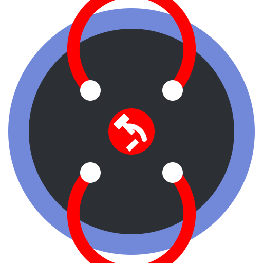

CommuSyncro
L'Unificateur de Serveurs Discord
Chargement...
Synchronisation
Synchronisez les messages entre plusieurs serveurs Discord
Sécurité
Contrôle total des permissions et de la modération
API
API REST et WebSocket pour les intégrations
Installation
1. Créez une Application Discord
Rendez-vous sur le Discord Developer Portal
1. Cliquez sur "New Application"
2. Nommez votre application "CommuSyncro"
3. Allez dans l'onglet "Bot"
4. Cliquez sur "Add Bot"2. Installez le Bot
git clone https://github.com/AnARCHIS12/commusyncro.git
cd commusyncro
npm install3. Configurez le Bot
cp .env.example .env
# Éditez .env avec votre token4. Lancez le Bot
npm startCommandes
/sync
Synchronise un salon avec un groupe spécifique
/sync group:revolution/createtunnel
Crée un portail vers un autre serveur
/createtunnel serverid:123 channelid:456/unsync
Retire le salon du réseau
/unsync🌟 Portails Révolutionnaires
Les portails permettent de créer des passages permanents entre serveurs :
- Créez un portail avec
/createtunnel - Les utilisateurs cliquent sur le bouton pour voyager
- Invitations uniques pour plus de sécurité
- Interface intuitive avec boutons
Configuration
Variables d'environnement
# Configuration Discord
TOKEN=votre_token_bot
CLIENT_ID=1324723736506662986
GUILD_ID=id_serveur_test
# Configuration Base de données
DB_HOST=localhost
DB_PORT=5432
DB_NAME=commusyncroAPI
Authentication
POST /api/auth/token
{
"clientId": "1324723736506662986",
"clientSecret": "votre_client_secret"
}